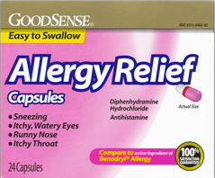

Click At The Icon To View Details
วิตามินรวมชนิดเม็ด
วิตามินรวมชนิดแคปซูล
ยาแก้เจ็บคอชนิดละลายเสมหะ
ยาแก้เจ็บคอชนิดลดอาการไอ
Click At The Icon To View Details
ยาลดไข้ Tylenol
ยาลดไข้ SARA
Click At The Icon To View Details
ยาแก้แพ้ชนิดไม่ง่วง
 ยาแก้แพ้ชนิดง่วง
Click At The Icon To View Details